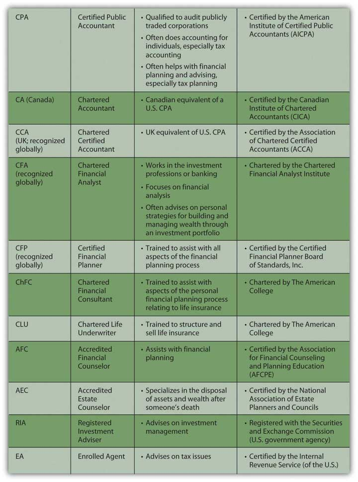

Even after reading this book, or perhaps especially after reading this book, you may want some help from a professional who specializes in financial planning. As with any professional that you go to for advice, you want expertise to help make your decisions, but in the end, you are the one who will certainly have to live with the consequences of your decisions, and you should make your own decisions.
There are a multitude of financial advisorsProfessionals with various backgrounds and training who give financial advice and assist with personal and business financial planning, including tax, estate, and investment planning. to help with financial planning, such as accountants, investment advisors, tax advisors, estate planners, or insurance agents. They have different kinds of training and qualifications, different educations and backgrounds, and different approaches to financial planning. To have a set of initials after their name, all have met educational and professional experience requirements and have passed exams administered by professional organizations, testing their knowledge in the field. Figure 1.17 "Professional Classifications" provides a perspective on the industry classifications of financial planning professionals.
Figure 1.17 Professional Classifications
Certifications are useful because they indicate training and experience in a particular aspect of financial planning. When looking for advice, however, it is important to understand where the advisor’s interests lie (as well as your own). It is always important to know where your information and advice come from and what that means for the quality of that information and advice. Specifically, how is the advisor compensated?
Some advisors just give, and get paid for, advice; some are selling a product, such as a particular investment or mutual fund or life insurance policy, and get paid when it gets sold. Others are selling a service, such as brokerage or mortgage servicing, and get paid when the service is used. All may be highly ethical and well intentioned, but when choosing a financial planning advisor, it is important to be able to distinguish among them.
Sometimes a friend or family member who knows you well and has your personal interests in mind may be a great resource for information and advice, but perhaps not as objective or knowledgeable as a disinterested professional. It is good to diversify your sources of information and advice, using professional and “amateur,” subjective and objective advisors. As always, diversification decreases risk.
Now you know a bit about the planning process, the personal factors that affect it, the larger economic contexts, and the business of financial advising. The next steps in financial planning get down to details, especially how to organize your financial information to see your current situation and how to begin to evaluate your alternatives.
The references that follow provide information for further research on the professionals and professional organizations mentioned in the chapter.
Explore the following links for more information on financial advisors: